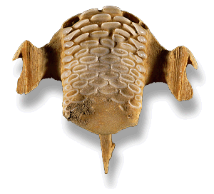
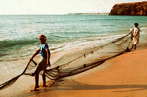

The Study of Ancient Animal Bone?

The analysis of the fish remains from RA's al-Hadd shows that people ate a
range of species, including tuna, jack, pompano, scad, rockcod, grouper, parrotfish
and queenfish. These could be caught by line-fishing from boats or with nets
and artefactual evidence of copper fish-hooks , traces of line and a net-sinker
supports these suggestions.

Do you want to find out more about the study of early fish
bones?
Cartwright, C.R. 1998 Seasonal aspects of Bronze and Iron Age communities at RA's
al-Hadd, Oman Environmental Archaeology 3;97-102
Cartwright, C.R. 1994 Preliminary results of the study of fish remains from a
3rd millennium BC site, HD1, at RA's al-Hadd, Oman in W. Van Neer(ed.) Fish
Exploitation in the Past Proceedings of the 7th meeting of the ICAZ Fish
Remains Working Group. Annales du Musee Rayale de l'Afrique Centrale,
Science Zoologiques no. 274, Tervuren, 239-241
Next page